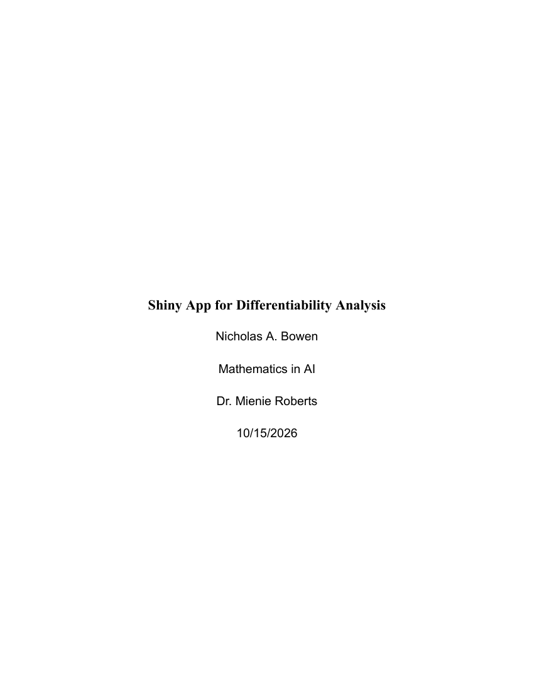

Selected work / Project 03
Differentiability,
made visible.
When does a curve have a slope? An interactive R Shiny project exploring the connection between continuity, tangent lines, and the derivative.
Both sides support one finite slope. The function is differentiable here.
This illustration uses exact formulas. Run app.R for the complete Shiny application and numerical diagnostics.
Is it sufficient?See what the examples reveal
01 / The project
From a picture
to an explanation.
A connected graph can hide a corner. Matching slopes can grow without bound. This project makes those distinctions easier to examine.
For Project 3 in Mathematics in AI, I built a Differentiability Explorer in R Shiny. The application brings together function selection, adjustable graphs, secant and tangent overlays, and numerical comparisons from both sides of a selected point.
The five models share one question: do the local slopes approach the same finite value? Comparing the results connects a visual feature of a graph with the calculus definition behind it.
02 / What the functions reveal
Five functions. Different outcomes.
These comparisons are at a = 0.
Use the illustration above to explore other points.
| Function | Definition | Continuous? | Derivative at zero |
|---|---|---|---|
| 01 Quadratic | x² | Yes | Exists: 0 |
| 02 Absolute value | |x| | Yes | Unequal slopes: −1, +1 |
| 03 Cube root | ∛x | Yes | Vertical tangent; no finite slope |
| 04 Piecewise corner | −x if x < 0; 2x otherwise | Yes | Unequal slopes: −1, +2 |
| 05 Jump | 0 if x < 0; 1 otherwise | No | Discontinuous |
Differentiability implies continuity. The reverse does not always hold.
03 / The modeling report
The mathematical
story, in full.
My report explains the purpose, mathematical formulation, numerical approach, results, and limitations of the Differentiability Explorer.
The report documents the project analysis. The source below includes subsequent refinements to the numerical calculations and diagnostic messages.

Shiny App for Differentiability AnalysisRead the report on this page
04 / Inside the application
The logic behind the picture.
Browse the working R source, from the five function models to the reactive interface. The refined version checks numerical results against known analytical derivatives and handles precision limits explicitly.
Loading the R source…- Exact answers, separate evidence
- An inconclusive numerical result no longer labels a differentiable point as a failure.
- Stable slope calculations
- Algebraic identities reduce cancellation. Unusable samples are excluded, and diagnostics stay on the local branch near a corner.
- Results you can inspect
- A CSV download preserves the calculations, tolerances, and direct-subtraction comparison. The graph can include the selected secant endpoint.
05 / Try the complete app
Open it in RStudio.
Download app.R, install Shiny once, then open the file in RStudio and click Run App.
install.packages("shiny")The complete Shiny app runs in R. The illustration on this portfolio runs directly in your browser.